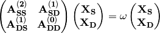
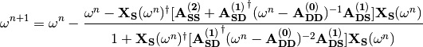
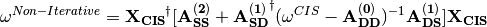

ADC: Ab Initio Polarization Propagator¶
Code author: Masaaki Saitow
Section author: Masaaki Saitow
Module: Keywords, PSI Variables, ADC
The ADC code seeks the pole structure of the polarization
propagator, which is equivalent to the correlated excitation energy,
in terms of the second order algebraic-diagrammatic construction
(ADC(2)) scheme. Originally, the ADC scheme was derived in purely
the diagrammatic language by Schirmer [Schirmer:1982] and later,
a sophisticated algebraic scheme was developed [Trofimov:2006]
by Trofimov et al. In general by n-th order ADC theory, the
excited state is treated at completely equivalent level to the
Møller–Plesset perturbation expansion of the same order.
Hence the ADC(2)
can be described as MP2 theory for the excited state and the relation
to such other response theories as CC2-LR, CIS(D) and CIS(D:math:_n) has
been addressed [Haettig:2002] by Hattig et al. In the ADC theory,
the residue calculus of the propagator is translated into the eigenvalue
problem with respect to the correlated response matrix, also known as the
shifted-Hamiltonian. The σ-vectors (Hamiltonian-vector products)
are constructed several times in the simultaneous expansion method (SEM)
to solve the eigenvalue problem, and each σ-vector construction
has a computational cost that scales as  . In addition,
the tensorial form of the σ-vector resembles to that of the
doubles correction in the CIS(D) energetic equation. As a consequence,
the pre-factor in the polynomial scaling becomes far larger than that
of the CIS(D) even though the quasi-degeneracy of the excited state is
properly accounted for in the ADC(2) model.
. In addition,
the tensorial form of the σ-vector resembles to that of the
doubles correction in the CIS(D) energetic equation. As a consequence,
the pre-factor in the polynomial scaling becomes far larger than that
of the CIS(D) even though the quasi-degeneracy of the excited state is
properly accounted for in the ADC(2) model.
In PSI4 the quite efficient and flexible integral-transformation library named libtrans is newly equipped and utilized in the production level DCFT code. The ADC code is also based on libtrans, and it is also based on libdpd, a library to utilize molecular symmetry in the tensorial manipulations in framework of the direct-product decomposition algorithm. By this feature, the Ritz space and intermediate tensors are blocked according to the irreducible representations of the point group, and the excited states that belong to different symmetry are sought separately.
In the output of ADC, the ADC(2) results may look as follows:
-> 1 B1 state : 0.2565095 (a.u.), 6.9799824 (eV)
Non-iterative: 0.2565636 (a.u.), 6.9814532 (eV)
Occ Vir Coefficient
---------------------------------------------
3 0 -0.9017047264
3 2 0.3038332241
3 1 0.2907567119
3 5 -0.0790167706
3 4 -0.0425829926
Converged in 4 iteration.
Squared norm of the S component: 0.9315336
The S vector is rotated up to 8.102 (deg.)
in which the ADC(2) excitation energy is indicated with arrow symbol and the pseudo-perturbative value, which is calculated in very similar fashion to the CIS(D) energy, is also presented on the following line. In this implementation, the ADC(2) secular matrix is treated effectively by renormalization of the double excitation manifold into the single excitation manifold. So, the effective secular equation is solved for several times for the specific state due to the eigenvalue dependence of the effective response matrix. Only the S component of the transition amplitude is obtained explicitly and the squared norm of the S block and the rotation angle from the corresponding CIS vector are given below the element of the amplitude. The difference between the ADC(2) value and its non-iterative counterpart is mostly negligible if the mixture among the CIS excited states is small and the quasi-degeneracy in the excited state is tolerably weak. But if there is a significant discrepancy in these energies, or the rotation angle is visibly large, special care may have to be taken for the strong effects caused by the higher excited states.
Partial Renormalization Scheme¶
The ADC code is capable of performing the partially-renormalized ADC(2) computation, termed PR-ADC(2). In the perturbative treatment of the singly-excited state, the doubly and triply excited configurations are accounted for as in the case of CIS(D). In the language of CIS(D), the former is regarded to introduce the orbital relaxation (OR) effect while the latter is argued to give rise to the differential correlation (DC) correction to the excited state. In the PR-ADC(2) scheme, the the DC term is corrected according to the ground state PR-MP2 correlation, in which the correlation between the electron pairs is accounted for in size-consistent and unitary-invariant fashion by modulating the MP1 amplitude. By utilizing the PR scheme, substantial resistance against quasi-degeneracy is readily granted as discussed in Ref. [Saitow:2012].
Using the ADC(2) code¶
A complete list of keywords related to ADC(2) computations is provided in Appendix ADC. Some sample inputs are provided in psi4/samples, in directories starting with the name adc. The most important keyword is ROOTS_PER_IRREP, which is an array giving the number of excited states desired for each irreducible representation.
Implementation¶
Some very essential points are emphasized for understanding of the
nature and the limitations of the theory. The ADC(2) response matrix,
denoted as  , is expanded in the single (S) and double (D)
excitation manifolds as
, is expanded in the single (S) and double (D)
excitation manifolds as

where the superscript on each matrix block indicates the order of the fluctuation. Instead of solving the above equation explicitly, the large D manifold is treated effectively as
![[\mathbf{A_{SS}^{(2)}}+
\mathbf{A_{SD}^{(1)}}^{\dagger}(\omega-
\mathbf{A_{DD}^{(0)}})^{-1}\mathbf{A_{DS}^{(1)}}]\mathbf{X_{S}}=
\omega\mathbf{X_{S}}.](_images/math/43f60d46dec386f07c10675d48c74a9b519a9118.png)
This form of the ADC(2) equation requires 7 – 10 iterations for convergence on only one root. But thanks to Newton-Raphson acceleration,

the computational time reduces to shorter than half of the simple iterative procedure. Construction of the denominator of the second term in the above equation is less computationally expensive than contruction of one $sigma$-vector with respect to the effective response matrix. The non-iterative excitation energy stated above is calculated as a diagonal element of the Davidson mini-Hamiltonian matrix in the SEM as,

where  and
and  denote the CIS
excitation energy and wave function, respectively. The explicit form of the
σ-vector is provided in a note accompanying the source code,
in the file psi4/src/bin/adc/sigma.pdf.
denote the CIS
excitation energy and wave function, respectively. The explicit form of the
σ-vector is provided in a note accompanying the source code,
in the file psi4/src/bin/adc/sigma.pdf.